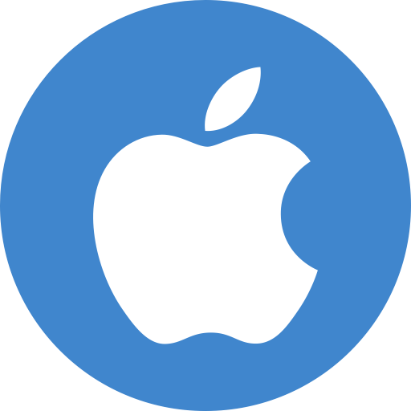
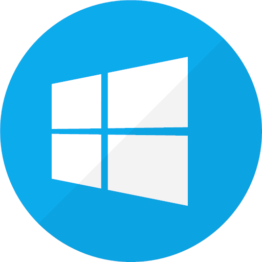

|
1)Android
Android is a mobile operating system based on a modified version of the Linux kernel and other open source software, designed primarily for touchscreen mobile devices such as smartphones and tablets. Android is developed by a consortium of developers known as the Open Handset Alliance, with the main contributor and commercial marketer being Google
|
|  |
2) IOS
IOS (formerly iPhone OS) is a mobile operating system created and developed by Apple Inc. exclusively for its hardware. It is the operating system that presently powers many of the company's mobile devices, including the iPhone, and iPod Touch; it also powered the iPad prior to the introduction of iPadOS in 2019. It is the second most popular mobile operating system globally after Android
|
|  |
3) Window
Windows Mobile is a discontinued family of mobile operating systems developed by Microsoft for smartphones and Pocket PCs.[1]
Its origin dated back to Windows CE in 1996, though Windows Mobile itself first appeared in 2000 as Pocket PC 2000. It was renamed "Windows Mobile" in 2003, at which point it came in several versions (similar to the desktop versions of Windows) and was aimed at business and enterprise consumers. When initially released in the mid-2000s, it was to be the portable equivalent of what Windows ' desktop OS was; a major force in the then-emerging mobile/portable areas, but its popularity - always the low end of the market, never equalled nor surpassed other mobile OS' (iOS and Android), and faded rapidly in the following years
|